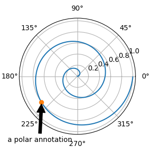
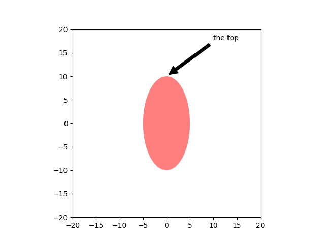
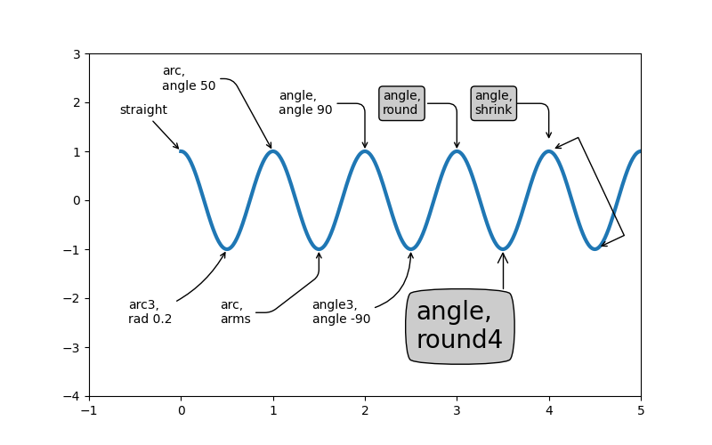
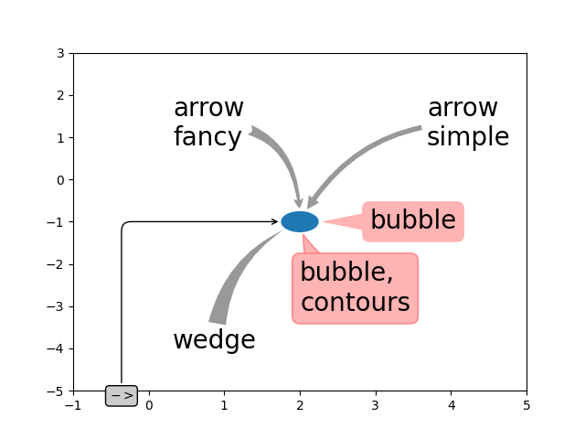

Note
Click here to download the full example code
Annotating Plots¶
The following examples show how it is possible to annotate plots in Matplotlib. This includes highlighting specific points of interest and using various visual tools to call attention to this point. For a more complete and in-depth description of the annotation and text tools in Matplotlib, see the tutorial on annotation.
import matplotlib.pyplot as plt
from matplotlib.patches import Ellipse
import numpy as np
from matplotlib.text import OffsetFrom
Specifying text points and annotation points¶
You must specify an annotation point xy=(x, y) to annotate this point.
Additionally, you may specify a text point xytext=(x, y) for the location
of the text for this annotation. Optionally, you can specify the coordinate
system of xy and xytext with one of the following strings for xycoords
and textcoords (default is 'data'):
'figure points' : points from the lower left corner of the figure
'figure pixels' : pixels from the lower left corner of the figure
'figure fraction' : (0, 0) is lower left of figure and (1, 1) is upper right
'axes points' : points from lower left corner of axes
'axes pixels' : pixels from lower left corner of axes
'axes fraction' : (0, 0) is lower left of axes and (1, 1) is upper right
'offset points' : Specify an offset (in points) from the xy value
'offset pixels' : Specify an offset (in pixels) from the xy value
'data' : use the axes data coordinate system
Note: for physical coordinate systems (points or pixels) the origin is the (bottom, left) of the figure or axes.
Optionally, you can specify arrow properties which draws and arrow from the text to the annotated point by giving a dictionary of arrow properties
Valid keys are:
width : the width of the arrow in points
frac : the fraction of the arrow length occupied by the head
headwidth : the width of the base of the arrow head in points
shrink : move the tip and base some percent away from the
annotated point and text
any key for matplotlib.patches.polygon (e.g., facecolor)
# Create our figure and data we'll use for plotting
fig, ax = plt.subplots(figsize=(3, 3))
t = np.arange(0.0, 5.0, 0.01)
s = np.cos(2*np.pi*t)
# Plot a line and add some simple annotations
line, = ax.plot(t, s)
ax.annotate('figure pixels',
xy=(10, 10), xycoords='figure pixels')
ax.annotate('figure points',
xy=(80, 80), xycoords='figure points')
ax.annotate('figure fraction',
xy=(.025, .975), xycoords='figure fraction',
horizontalalignment='left', verticalalignment='top',
fontsize=20)
# The following examples show off how these arrows are drawn.
ax.annotate('point offset from data',
xy=(2, 1), xycoords='data',
xytext=(-15, 25), textcoords='offset points',
arrowprops=dict(facecolor='black', shrink=0.05),
horizontalalignment='right', verticalalignment='bottom')
ax.annotate('axes fraction',
xy=(3, 1), xycoords='data',
xytext=(0.8, 0.95), textcoords='axes fraction',
arrowprops=dict(facecolor='black', shrink=0.05),
horizontalalignment='right', verticalalignment='top')
# You may also use negative points or pixels to specify from (right, top).
# E.g., (-10, 10) is 10 points to the left of the right side of the axes and 10
# points above the bottom
ax.annotate('pixel offset from axes fraction',
xy=(1, 0), xycoords='axes fraction',
xytext=(-20, 20), textcoords='offset pixels',
horizontalalignment='right',
verticalalignment='bottom')
ax.set(xlim=(-1, 5), ylim=(-3, 5))
Out:
[(-1.0, 5.0), (-3.0, 5.0)]
Using multiple coordinate systems and axis types¶
You can specify the xypoint and the xytext in different positions and coordinate systems, and optionally turn on a connecting line and mark the point with a marker. Annotations work on polar axes too.
In the example below, the xy point is in native coordinates (xycoords defaults to 'data'). For a polar axes, this is in (theta, radius) space. The text in the example is placed in the fractional figure coordinate system. Text keyword args like horizontal and vertical alignment are respected.
fig, ax = plt.subplots(subplot_kw=dict(projection='polar'), figsize=(3, 3))
r = np.arange(0, 1, 0.001)
theta = 2*2*np.pi*r
line, = ax.plot(theta, r)
ind = 800
thisr, thistheta = r[ind], theta[ind]
ax.plot([thistheta], [thisr], 'o')
ax.annotate('a polar annotation',
xy=(thistheta, thisr), # theta, radius
xytext=(0.05, 0.05), # fraction, fraction
textcoords='figure fraction',
arrowprops=dict(facecolor='black', shrink=0.05),
horizontalalignment='left',
verticalalignment='bottom')
# You can also use polar notation on a cartesian axes. Here the native
# coordinate system ('data') is cartesian, so you need to specify the
# xycoords and textcoords as 'polar' if you want to use (theta, radius).
el = Ellipse((0, 0), 10, 20, facecolor='r', alpha=0.5)
fig, ax = plt.subplots(subplot_kw=dict(aspect='equal'))
ax.add_artist(el)
el.set_clip_box(ax.bbox)
ax.annotate('the top',
xy=(np.pi/2., 10.), # theta, radius
xytext=(np.pi/3, 20.), # theta, radius
xycoords='polar',
textcoords='polar',
arrowprops=dict(facecolor='black', shrink=0.05),
horizontalalignment='left',
verticalalignment='bottom',
clip_on=True) # clip to the axes bounding box
ax.set(xlim=[-20, 20], ylim=[-20, 20])
- 
- 
Out:
[(-20.0, 20.0), (-20.0, 20.0)]
Customizing arrow and bubble styles¶
The arrow between xytext and the annotation point, as well as the bubble that covers the annotation text, are highly customizable. Below are a few parameter options as well as their resulting output.
fig, ax = plt.subplots(figsize=(8, 5))
t = np.arange(0.0, 5.0, 0.01)
s = np.cos(2*np.pi*t)
line, = ax.plot(t, s, lw=3)
ax.annotate(
'straight',
xy=(0, 1), xycoords='data',
xytext=(-50, 30), textcoords='offset points',
arrowprops=dict(arrowstyle="->"))
ax.annotate(
'arc3,\nrad 0.2',
xy=(0.5, -1), xycoords='data',
xytext=(-80, -60), textcoords='offset points',
arrowprops=dict(arrowstyle="->",
connectionstyle="arc3,rad=.2"))
ax.annotate(
'arc,\nangle 50',
xy=(1., 1), xycoords='data',
xytext=(-90, 50), textcoords='offset points',
arrowprops=dict(arrowstyle="->",
connectionstyle="arc,angleA=0,armA=50,rad=10"))
ax.annotate(
'arc,\narms',
xy=(1.5, -1), xycoords='data',
xytext=(-80, -60), textcoords='offset points',
arrowprops=dict(
arrowstyle="->",
connectionstyle="arc,angleA=0,armA=40,angleB=-90,armB=30,rad=7"))
ax.annotate(
'angle,\nangle 90',
xy=(2., 1), xycoords='data',
xytext=(-70, 30), textcoords='offset points',
arrowprops=dict(arrowstyle="->",
connectionstyle="angle,angleA=0,angleB=90,rad=10"))
ax.annotate(
'angle3,\nangle -90',
xy=(2.5, -1), xycoords='data',
xytext=(-80, -60), textcoords='offset points',
arrowprops=dict(arrowstyle="->",
connectionstyle="angle3,angleA=0,angleB=-90"))
ax.annotate(
'angle,\nround',
xy=(3., 1), xycoords='data',
xytext=(-60, 30), textcoords='offset points',
bbox=dict(boxstyle="round", fc="0.8"),
arrowprops=dict(arrowstyle="->",
connectionstyle="angle,angleA=0,angleB=90,rad=10"))
ax.annotate(
'angle,\nround4',
xy=(3.5, -1), xycoords='data',
xytext=(-70, -80), textcoords='offset points',
size=20,
bbox=dict(boxstyle="round4,pad=.5", fc="0.8"),
arrowprops=dict(arrowstyle="->",
connectionstyle="angle,angleA=0,angleB=-90,rad=10"))
ax.annotate(
'angle,\nshrink',
xy=(4., 1), xycoords='data',
xytext=(-60, 30), textcoords='offset points',
bbox=dict(boxstyle="round", fc="0.8"),
arrowprops=dict(arrowstyle="->",
shrinkA=0, shrinkB=10,
connectionstyle="angle,angleA=0,angleB=90,rad=10"))
# You can pass an empty string to get only annotation arrows rendered
ax.annotate('', xy=(4., 1.), xycoords='data',
xytext=(4.5, -1), textcoords='data',
arrowprops=dict(arrowstyle="<->",
connectionstyle="bar",
ec="k",
shrinkA=5, shrinkB=5))
ax.set(xlim=(-1, 5), ylim=(-4, 3))
# We'll create another figure so that it doesn't get too cluttered
fig, ax = plt.subplots()
el = Ellipse((2, -1), 0.5, 0.5)
ax.add_patch(el)
ax.annotate('$->$',
xy=(2., -1), xycoords='data',
xytext=(-150, -140), textcoords='offset points',
bbox=dict(boxstyle="round", fc="0.8"),
arrowprops=dict(arrowstyle="->",
patchB=el,
connectionstyle="angle,angleA=90,angleB=0,rad=10"))
ax.annotate('arrow\nfancy',
xy=(2., -1), xycoords='data',
xytext=(-100, 60), textcoords='offset points',
size=20,
# bbox=dict(boxstyle="round", fc="0.8"),
arrowprops=dict(arrowstyle="fancy",
fc="0.6", ec="none",
patchB=el,
connectionstyle="angle3,angleA=0,angleB=-90"))
ax.annotate('arrow\nsimple',
xy=(2., -1), xycoords='data',
xytext=(100, 60), textcoords='offset points',
size=20,
# bbox=dict(boxstyle="round", fc="0.8"),
arrowprops=dict(arrowstyle="simple",
fc="0.6", ec="none",
patchB=el,
connectionstyle="arc3,rad=0.3"))
ax.annotate('wedge',
xy=(2., -1), xycoords='data',
xytext=(-100, -100), textcoords='offset points',
size=20,
# bbox=dict(boxstyle="round", fc="0.8"),
arrowprops=dict(arrowstyle="wedge,tail_width=0.7",
fc="0.6", ec="none",
patchB=el,
connectionstyle="arc3,rad=-0.3"))
ax.annotate('bubble,\ncontours',
xy=(2., -1), xycoords='data',
xytext=(0, -70), textcoords='offset points',
size=20,
bbox=dict(boxstyle="round",
fc=(1.0, 0.7, 0.7),
ec=(1., .5, .5)),
arrowprops=dict(arrowstyle="wedge,tail_width=1.",
fc=(1.0, 0.7, 0.7), ec=(1., .5, .5),
patchA=None,
patchB=el,
relpos=(0.2, 0.8),
connectionstyle="arc3,rad=-0.1"))
ax.annotate('bubble',
xy=(2., -1), xycoords='data',
xytext=(55, 0), textcoords='offset points',
size=20, va="center",
bbox=dict(boxstyle="round", fc=(1.0, 0.7, 0.7), ec="none"),
arrowprops=dict(arrowstyle="wedge,tail_width=1.",
fc=(1.0, 0.7, 0.7), ec="none",
patchA=None,
patchB=el,
relpos=(0.2, 0.5)))
ax.set(xlim=(-1, 5), ylim=(-5, 3))
- 
- 
Out:
[(-1.0, 5.0), (-5.0, 3.0)]
More examples of coordinate systems¶
Below we'll show a few more examples of coordinate systems and how the location of annotations may be specified.
fig, (ax1, ax2) = plt.subplots(1, 2)
bbox_args = dict(boxstyle="round", fc="0.8")
arrow_args = dict(arrowstyle="->")
# Here we'll demonstrate the extents of the coordinate system and how
# we place annotating text.
ax1.annotate('figure fraction : 0, 0', xy=(0, 0), xycoords='figure fraction',
xytext=(20, 20), textcoords='offset points',
ha="left", va="bottom",
bbox=bbox_args,
arrowprops=arrow_args)
ax1.annotate('figure fraction : 1, 1', xy=(1, 1), xycoords='figure fraction',
xytext=(-20, -20), textcoords='offset points',
ha="right", va="top",
bbox=bbox_args,
arrowprops=arrow_args)
ax1.annotate('axes fraction : 0, 0', xy=(0, 0), xycoords='axes fraction',
xytext=(20, 20), textcoords='offset points',
ha="left", va="bottom",
bbox=bbox_args,
arrowprops=arrow_args)
ax1.annotate('axes fraction : 1, 1', xy=(1, 1), xycoords='axes fraction',
xytext=(-20, -20), textcoords='offset points',
ha="right", va="top",
bbox=bbox_args,
arrowprops=arrow_args)
# It is also possible to generate draggable annotations
an1 = ax1.annotate('Drag me 1', xy=(.5, .7), xycoords='data',
#xytext=(.5, .7), textcoords='data',
ha="center", va="center",
bbox=bbox_args,
#arrowprops=arrow_args
)
an2 = ax1.annotate('Drag me 2', xy=(.5, .5), xycoords=an1,
xytext=(.5, .3), textcoords='axes fraction',
ha="center", va="center",
bbox=bbox_args,
arrowprops=dict(patchB=an1.get_bbox_patch(),
connectionstyle="arc3,rad=0.2",
**arrow_args))
an1.draggable()
an2.draggable()
an3 = ax1.annotate('', xy=(.5, .5), xycoords=an2,
xytext=(.5, .5), textcoords=an1,
ha="center", va="center",
bbox=bbox_args,
arrowprops=dict(patchA=an1.get_bbox_patch(),
patchB=an2.get_bbox_patch(),
connectionstyle="arc3,rad=0.2",
**arrow_args))
# Finally we'll show off some more complex annotation and placement
text = ax2.annotate('xy=(0, 1)\nxycoords=("data", "axes fraction")',
xy=(0, 1), xycoords=("data", 'axes fraction'),
xytext=(0, -20), textcoords='offset points',
ha="center", va="top",
bbox=bbox_args,
arrowprops=arrow_args)
ax2.annotate('xy=(0.5, 0)\nxycoords=artist',
xy=(0.5, 0.), xycoords=text,
xytext=(0, -20), textcoords='offset points',
ha="center", va="top",
bbox=bbox_args,
arrowprops=arrow_args)
ax2.annotate('xy=(0.8, 0.5)\nxycoords=ax1.transData',
xy=(0.8, 0.5), xycoords=ax1.transData,
xytext=(10, 10),
textcoords=OffsetFrom(ax2.bbox, (0, 0), "points"),
ha="left", va="bottom",
bbox=bbox_args,
arrowprops=arrow_args)
ax2.set(xlim=[-2, 2], ylim=[-2, 2])
plt.show()
Total running time of the script: ( 0 minutes 1.894 seconds)
Keywords: matplotlib code example, codex, python plot, pyplot Gallery generated by Sphinx-Gallery